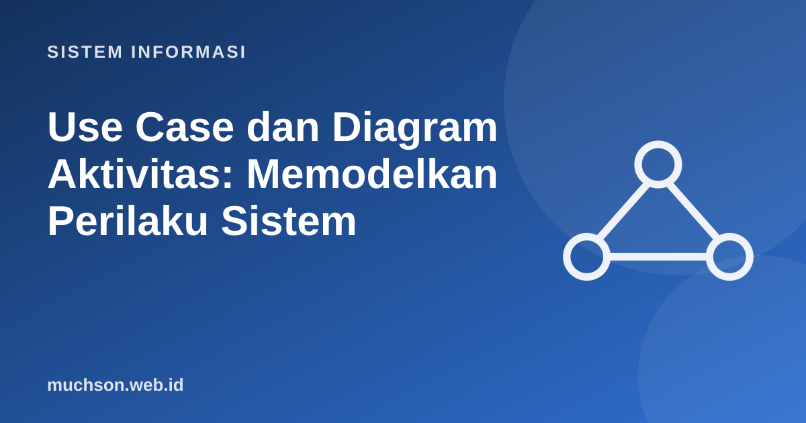

Beranda › Artikel › Sistem Informasi
Sistem InformasiUse Case dan Diagram Aktivitas: Memodelkan Perilaku Sistem
DFD menunjukkan ke mana data bergerak; use case dan diagram aktivitas menunjukkan apa yang dapat dilakukan pengguna dan bagaimana alur kerjanya. Keduanya adalah bahasa komunikasi yang efektif antara analis, pengguna, dan pengembang.
Sebaiknya sudah paham: analisis kebutuhan, DFD

Setelah membaca dan mencoba materi ini, Anda mampu:
- mengidentifikasi aktor dan use case dari kebutuhan
- menggambar use case diagram dengan relasi include dan extend
- menulis skenario use case (alur utama, alur alternatif)
- menggambar diagram aktivitas dengan keputusan, paralel, dan swimlane
- memilih antara DFD, use case, dan diagram aktivitas sesuai tujuan
Use case diagram
Use case menyatakan tujuan pengguna yang dilayani sistem (bukan fitur teknis). Aktor adalah peran di luar sistem yang berinteraksi dengannya; satu orang dapat memainkan beberapa aktor.
| Relasi | Makna | Contoh |
|---|---|---|
| Asosiasi | Aktor menjalankan use case | Anggota – Meminjam buku |
| «include» | Use case selalu memanggil use case lain (perilaku bersama) | Meminjam buku «include» Login |
| «extend» | Perilaku opsional yang menyela dalam kondisi tertentu | Meminjam buku ← «extend» ← Membayar denda (bila ada denda) |
| Generalisasi | Aktor atau use case khusus dari yang umum | Dosen adalah Anggota |
Skenario use case
Diagram hanya daftar; isi sesungguhnya ada pada skenario yang menuliskan langkah-langkah.
Use case : Meminjam buku
Aktor : Anggota
Prakondisi : Anggota sudah login
Pascakondisi: Buku tercatat dipinjam, stok berkurang 1
Alur utama:
1. Anggota memilih buku dari hasil pencarian.
2. Sistem memeriksa ketersediaan buku.
3. Sistem memeriksa batas pinjaman anggota.
4. Sistem mencatat peminjaman dan tanggal jatuh tempo.
5. Sistem menampilkan bukti pinjam.
Alur alternatif:
2a. Buku tidak tersedia: sistem menawarkan reservasi. Selesai.
3a. Batas pinjaman tercapai: sistem menolak dan menjelaskan alasannya. Selesai.
3b. Anggota memiliki denda: sistem mengarahkan ke use case Membayar denda.Diagram aktivitas
Diagram aktivitas menunjukkan alur kerja langkah demi langkah, termasuk keputusan dan kegiatan paralel. Cocok untuk memodelkan proses bisnis dan alur sebuah use case. Dengan swimlane, tiap jalur menunjukkan siapa yang bertanggung jawab.
Elemen penting lain: fork/join (batang tebal) untuk aktivitas paralel, misalnya "kirim email" dan "perbarui stok" berjalan bersamaan, lalu bergabung kembali; dan node akhir bila alur berakhir.
Memilih diagram yang tepat
| Pertanyaan | Diagram |
|---|---|
| Siapa memakai sistem dan untuk tujuan apa? | Use case diagram |
| Bagaimana langkah rinci satu tujuan? | Skenario use case, diagram aktivitas |
| Bagaimana data bergerak antar proses? | DFD |
| Bagaimana urutan pesan antar objek? | Diagram sekuens |
| Bagaimana struktur data? | ERD atau diagram kelas |
1. Buat daftar use case untuk sistem pemesanan makanan online dari sudut pandang Pelanggan.
2. Tulis alur alternatif untuk use case Membayar ketika saldo tidak cukup.
3. Mengapa use case sebaiknya dinamai dengan kata kerja yang menyatakan tujuan pengguna?
4. Gambarkan diagram aktivitas sederhana untuk login dengan kemungkinan sandi salah tiga kali.
- Use case: aktor dan tujuan; include untuk wajib, extend untuk opsional.
- Skenario menuliskan alur utama dan alur alternatif.
- Diagram aktivitas: alur, keputusan, paralel, swimlane.
- Pilih diagram sesuai pertanyaan yang ingin dijawab.
Tanya jawab
Apa beda aktor dan pengguna?
Apakah use case sama dengan user story?
Alat gambar apa yang dipakai?
Referensi
- Object Management Group: UML Specification
- Alistair Cockburn, Writing Effective Use Cases (Addison-Wesley, 2000)
- Kenneth E. Kendall dan Julie E. Kendall, Systems Analysis and Design (Pearson)
- draw.io (diagrams.net) UML templates